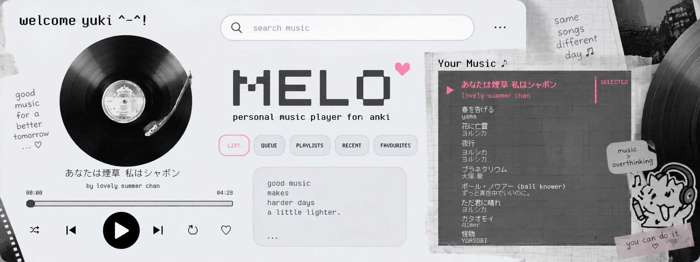
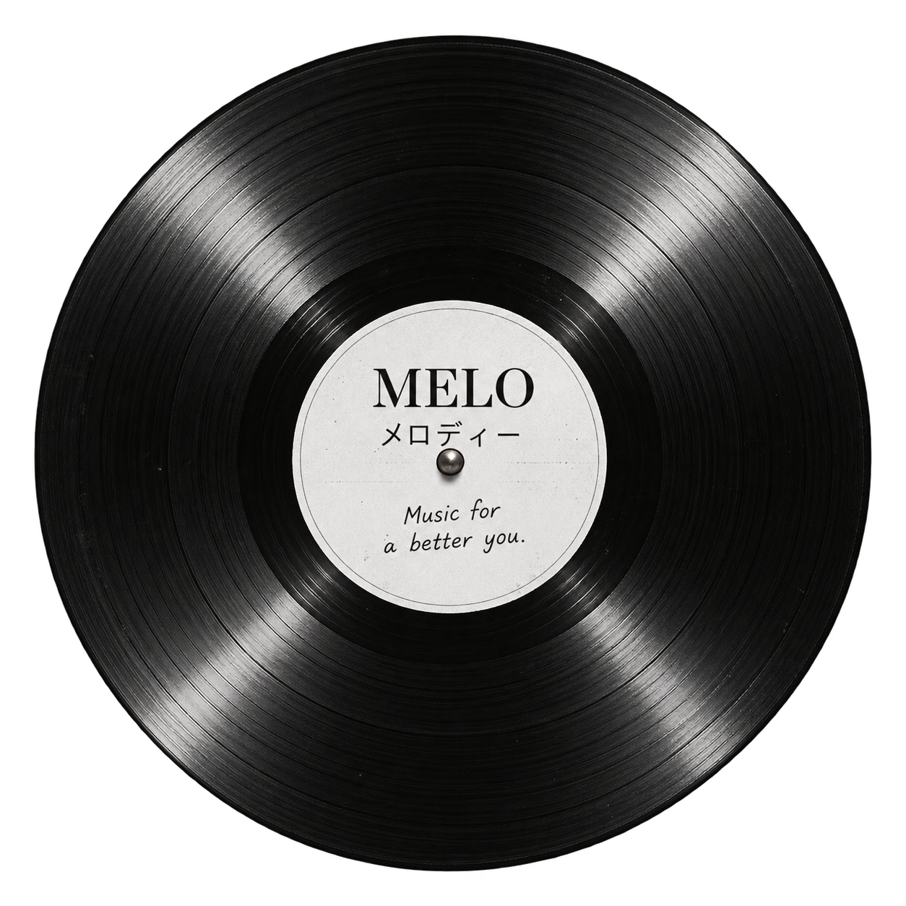

✦✧♡≋
a little world is waking up
0%
loading melo...
please wait
✦╲╱♡✧≋✦⌁✧♡✦╲╱✧
WELCOME TO
music for a better you.
A little world for your music. Enter the room, find your records, make it yours, and stay as long as you like.
WELCOME HOMEYOUR
MUSIC WORLD.
Choose a room. Follow the sound. Make yourself comfortable.
✦✧✦♡
ROOM 02MELO WEBopen the player →◉
ROOM 04GET MELObring it home →♡
ROOM 05RADIOtune into MELO →◒
MELOMusic for
a better you.メロディー ♡
TIP the vinyl is the heart of the room. wander around. ♡
MELO.WEB / v1.0
good music, brighter days ♡
ROOM 01 / FIND YOUR NEXT SOUND
DISCOVER.
A little corner for moods, new finds, featured records and things worth hearing.
01MOOD OF THE WEEKslow mornings · soft focus · late-night walks
02FEATUREDhand-picked MELO records
03NEW IN MELOfresh additions to your world
ROOM 03 / VISUALS
THE WALL.

MELO DESKTOP
The player as a little piece of your room.

ROTARY
Records, needles and all the tiny details.
THE ARCHIVE
Artwork and experiments from the MELO world.
ROOM 04 / BRING IT HOME
GET MELO.
Take the listening room with you. MELO Desktop is currently built for Windows.
OPEN GET MELO PAGE →
ROOM 05 / BROADCAST
MELO RADIO.
Tune into little listening worlds curated around a mood.
01SOFT HOURSslow · warm · dreamy
02FOCUSquiet · steady · clear
033AMlate · hazy · alone together
ROOM 06 / STAY AWHILE
THE MELO ROOM.
A tiny interactive corner of the MELO world. Explore the objects, find the little details, and see what happens.
THE DESK
Where the music lives.
THE RECORDS
Some things are better left spinning.
ROOM 07 / YOUR IDENTITY
PLAYER CARD.
Sign in to keep your MELO account, playlists, favorites and listening stats together.
OPEN MY PLAYER CARD →